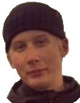

PuppyLove
PuppyLove - Resan Hit
Det var en vacker sommardag -57, Arne Tjärnheden gick ut till sin traktor för att påbörja årets skörd när han fick en gullig liten överraskning, som för alltid skulle förändra inte bara hans liv, utan flera generationer av Tjärnhedens.
På bilden ovan syns Max, PuppyLoves första lilla valp, liggandes på den samme traktor vars däck han sökte skydd under när Arne fann honom. De fann mer än en vän i varann, de fann en livsförändrande upplevelse. Det var inte långt efter att Max hade blivit gårdens alfahund som det hade inkommit ett par till herrelösa hundar. Både Max och Arne tog varmt emot de med både öppna armar och tassar, och så hade PuppyLoves härbärge startat på riktigt.
Arne har nu passerat vidare till livet efter detta. Och så har även Max, men deras vision och stolthet lever vidare genom deras söner och deras söners söner. Idag drivs PuppyLove av Jonathan och Olle Tjärnheden, och det är mer än bara ett härbärge för hundar - de hjälper hundar, både unga och gamla, att finna ett hem fyllt med kärlek och värme!
PuppyLove är en idéell organisation som drivs mest genom kärlek. Dock finns det en kostnad för vaccin som tas ut när husse och hund finner varandra genom oss. Hundar vistas både i våra lokaler och hos temporära fosterfamiljer, vilket medför att besök kan ske utanför PuppyLove samt att en del hundar är mer vana med barn än andra. För mer information, vänligen kontakta oss!
Hälsningar, Jonathan & Olle